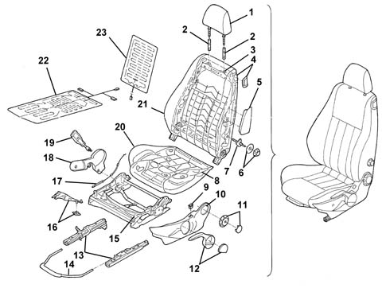
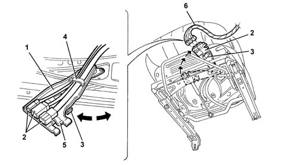

Introduction - FRONT SEATS
- Path
- Descriptions > 70 FITTINGS > 7045 FRONT SEATS > Introduction - FRONT SEATS
- Kind
- system description
- Applies to
- all engines; all production periods
- Interactive page
- https://sloeber94.github.io/elrnDB-a147/en/#/3026125
Applies to: all engines; all production periods
SPECIFICATIONS
The front seats have been designed to optimize comfort and safety and ensure maximum driving comfort, ideal lateral containment properties and lumbar support.
The base structure is fastened to the seat lift unit and is made out of pressed steel with an antisubmarining ridge. This prevents the occupant from sliding under the lap part of the seat belt if the car decelerates abruptly.
The squab frame is made out of a pressed steel structure that improves energy absorption in the case of rear impact. This is anchored to the seat lift unit by means of a bilateral joint. On three-door versions, the squab can be tilted by means of the release handle, which allows the seat to tilt and glide forward in a single manoeuvre. Subsquent repositioning is aided by a memory mechanism in the slide guides. This allows the seat to be restored to its initial position automatically. Squab rake may be adjusted by turning a knob on the outside near the joint.
The squab supports a height-adjustable head restraint. This can be moved through a travel of about 50 mm by means of a release button located on the right side of the head restraint.
The seat lift unit consists of a steel frame that includes the lift mechanism. The slide guides are secured to the lift mechanism, cushion and squab. The seat belt branch fitted with the fastening sensor is secured to the inner side of the seat lift unit
Driver's seat reach may be adjusted through a travel of 230 mm along angled guides. Seat ride may be adjusted through a travel of 60 mm by means of a new type of mechanism that moves the seat in an arc (a maximum height movement corresponds to a horizontal forward movement of about 50 mm). This mechanism is operated by a ratchet lever.
The driver's seat squab also comes with lumbar adjustment. This is operated by means of a knob on the side facing toward the outside of the car.
On certain versions, the seats are also fitted with heating pads located between the trim and padding. The heating is operated by means of a switch on the outer seat trim. On certain versions, an opening arm-rest is fitted between the seats. This is secured to the lower central trim and can be used to stow small items.
COMPOSITION
Structure of the front seat

1- Head restraint 2 - Head restraint bushes 3 - Squab frame 4 - Squab release device 5 - Side bag 6 - Lumbar adjustment knob 7 - Lumbar adjustment device 8 - Cushion base 9 - Heat pad switch 10 - Exterior guard 11 - Squab adjustment knob 12 - Seat height adjustment lever 13 - Guide 14 - Seat slide control lever 15 - Seat lift unit 16 - Connector carrier bracket 17 - Slide position memory control cable 18 - Inner guard 19 - Seat belt anchorage link 20 - Cushion trim 21 - Squab trim 22 - Cushion heat pad 23 - Squab heat pad
The Air Bag module, seat belt fastened sensor (for the driver's side only) and heat pad (if present) connection leads are anchored to the seat structure by bands and covered by a protective coating.
The air bag module, seat belt fastened sensor and heat pad (if present) connectors are anchored to a connector bracket, anchored in turn to the seat structure. The bracket may be rotated forward by means of the anchorage clip to gain access to the connectors .
View of connector carrier bracket

1 - Connector carrier bracket 2 - Electrical connectors 3 - Anchorage clip 4 - Seat electrical lead retainer 5 - Vehicle electrical lead retainer 6 - Vehicle electrical cable
Wording on the outside of the squab warns of the presence of an air bag beneath the trim 5580 SPECIAL ACCESSORIES.
If the air bag module, cable and seat trim are replaced, the new parts come with registration plates which should be detached and stuck on the seat base so that they can be easily read.